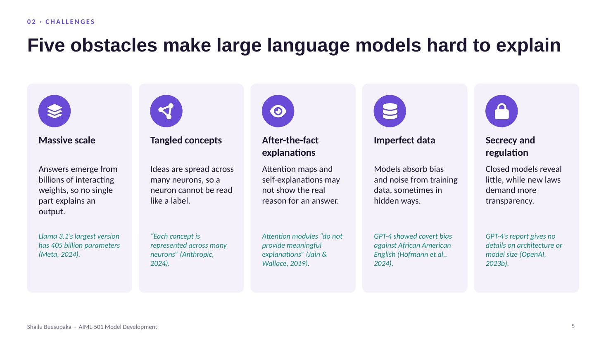
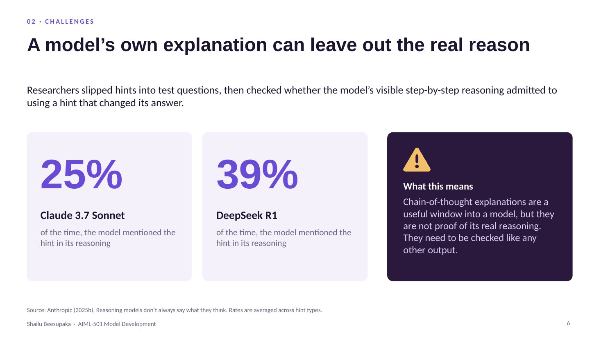
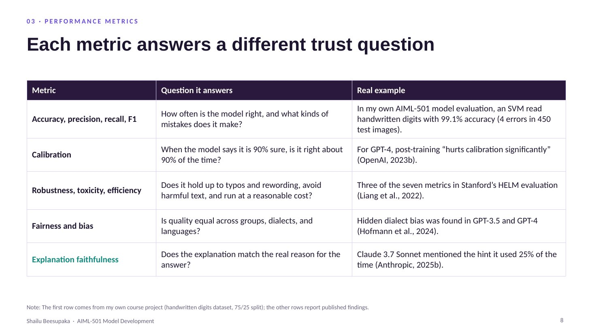
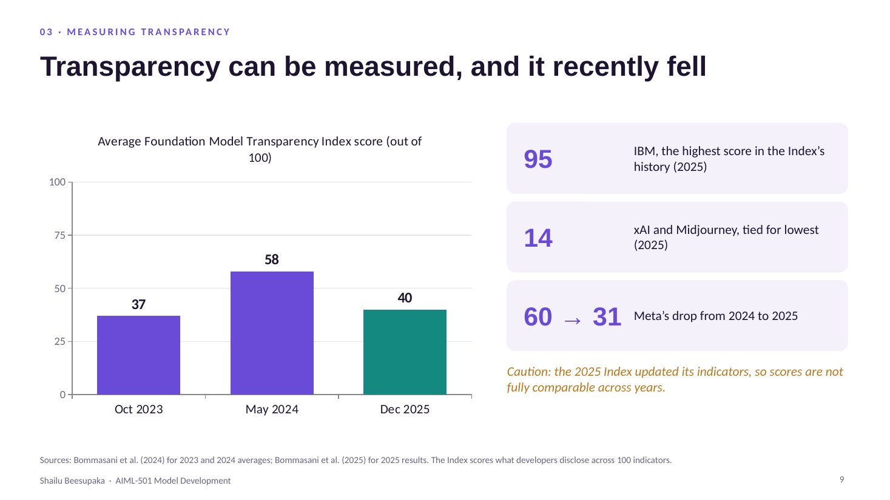
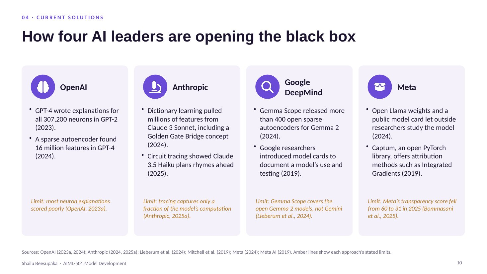

Introduction
This artifact is based on my AIML-501 Model Development portfolio assignment on explainable AI, validation, and performance metrics.
Large language models are now used in healthcare, finance, and law, yet even their developers cannot fully explain how they reach an answer. This presentation explains that problem in plain language and shows what explanations, testing, and measurement can and cannot tell us about whether to trust an AI system.
Description
The presentation is organized into four numbered sections. 01 Explainable AI and its importance defines XAI using NIST’s four principles and shows why transparency matters in high-stakes fields and under the EU AI Act. 02 Challenges covers five obstacles (scale, tangled concepts, after-the-fact explanations, imperfect data, and secrecy) and shows research in which reasoning models mentioned a hint they used only 25% to 39% of the time. 03 Validation and performance metrics presents a six-step validation cycle, a table linking each metric to the trust question it answers, and a chart of Stanford’s Foundation Model Transparency Index. 04 Current solutions compares the interpretability work of four AI leaders and summarizes six techniques with their limits.
The explanatory document uses the same four numbered sections, in the same order, so the slides and the document match.

Challenges: five obstacles, each backed by a published finding.

Unfaithful explanations: a model’s own reasoning can leave out the real reason for its answer.

Metrics: each metric answers a different trust question, including one example from my own model evaluation.

Measuring transparency: average scores of 37, 58, and 40, with a note that the 2025 indicators changed.

Industry leaders: what OpenAI, Anthropic, Google DeepMind, and Meta are doing, and each approach’s stated limit.
Objective
- Explain the key obstacles in interpreting the outputs of generative AI models
- Describe the techniques OpenAI, Anthropic, Google DeepMind, and Meta use to improve explainability
- Show how validation processes and performance metrics support reliability, accountability, and trust
- Communicate these ideas clearly and accurately to a non-technical audience
Process
- Researched explainability challenges and industry techniques using developer research pages, peer-reviewed papers, NIST guidance, and the EU AI Act
- Checked every statistic against its original source and recorded exactly what each number measures
- Organized the content into four numbered sections that match the assignment’s four required topics
- Designed one message per slide, with a section label, an icon, and a source line on every content slide
- Used color to carry meaning: violet for main content, teal for evidence, and amber for limitations
- Built the transparency chart as a native PowerPoint chart and flagged where scores are not directly comparable
- Connected the metrics slide to my own AIML-501 model evaluation, where an SVM classified handwritten digits with 99.1% accuracy
- Wrote an explanatory document that follows the same four sections as the slides
Tools and Technologies Used
Value Proposition
This presentation turns one of the hardest problems in AI into a short, clear story: why we cannot yet see fully inside large language models, and how explanations, validation, and metrics together help people decide how far to trust them. It shows that I can research a fast-moving topic, check claims against original sources, and present them honestly to a general audience.
Unique Value: Every approach is shown alongside its limit. Instead of presenting explainability tools as solved, the slides mark where each one falls short and close with a practical checklist anyone can use before trusting an AI answer.
Relevance: Useful for AI and analytics roles in regulated fields such as healthcare and finance, where professionals must explain model decisions to managers, customers, and regulators.
References
Anthropic. (2024, May 21). Mapping the mind of a large language model. https://www.anthropic.com/research/mapping-mind-language-model
Anthropic. (2025a, March 27). Tracing the thoughts of a large language model. https://www.anthropic.com/research/tracing-thoughts-language-model
Anthropic. (2025b, April 3). Reasoning models don’t always say what they think. https://www.anthropic.com/research/reasoning-models-dont-say-think
Belinkov, Y. (2022). Probing classifiers: Promises, shortcomings, and advances. Computational Linguistics, 48(1), 207–219. https://doi.org/10.1162/coli_a_00422
Bommasani, R., Klyman, K., Kapoor, S., Longpre, S., Xiong, B., Maslej, N., & Liang, P. (2024, May 21). The Foundation Model Transparency Index after 6 months. Stanford Center for Research on Foundation Models. https://crfm.stanford.edu/2024/05/21/fmti-may-2024.html
Bommasani, R., Klyman, K., Wan, A., & Liang, P. (2025, December 9). Transparency in AI is on the decline. Stanford Institute for Human-Centered Artificial Intelligence. https://hai.stanford.edu/news/transparency-in-ai-is-on-the-decline
Hofmann, V., Kalluri, P. R., Jurafsky, D., & King, S. (2024). AI generates covertly racist decisions about people based on their dialect. Nature, 633(8028), 147–154. https://doi.org/10.1038/s41586-024-07856-5
Jain, S., & Wallace, B. C. (2019). Attention is not explanation. In Proceedings of the 2019 Conference of the North American Chapter of the Association for Computational Linguistics: Human Language Technologies (pp. 3543–3556). Association for Computational Linguistics. https://doi.org/10.18653/v1/N19-1357
James, G., Witten, D., Hastie, T., & Tibshirani, R. (2021). An introduction to statistical learning: With applications in R (2nd ed.). Springer. https://doi.org/10.1007/978-1-0716-1418-1
Liang, P., Bommasani, R., Lee, T., Tsipras, D., Soylu, D., Yasunaga, M., Zhang, Y., Narayanan, D., Wu, Y., Kumar, A., Newman, B., Yuan, B., Yan, B., Zhang, C., Cosgrove, C., Manning, C. D., Ré, C., Acosta-Navas, D., Hudson, D. A., … Koreeda, Y. (2022). Holistic evaluation of language models (arXiv:2211.09110). arXiv. https://doi.org/10.48550/arXiv.2211.09110
Lieberum, T., Rajamanoharan, S., Conmy, A., Smith, L., Sonnerat, N., Varma, V., Kramár, J., Dragan, A., Shah, R., & Nanda, N. (2024). Gemma Scope: Open sparse autoencoders everywhere all at once on Gemma 2 (arXiv:2408.05147). arXiv. https://doi.org/10.48550/arXiv.2408.05147
Meta. (2024). Llama 3.1 model card. GitHub. https://github.com/meta-llama/llama-models/blob/main/models/llama3_1/MODEL_CARD.md
Meta AI. (2019, October 10). Open-sourcing Captum: A model interpretability library for PyTorch. https://ai.meta.com/blog/open-sourcing-captum-a-model-interpretability-library-for-pytorch/
Mitchell, M., Wu, S., Zaldivar, A., Barnes, P., Vasserman, L., Hutchinson, B., Spitzer, E., Raji, I. D., & Gebru, T. (2019). Model cards for model reporting. In Proceedings of the Conference on Fairness, Accountability, and Transparency (pp. 220–229). Association for Computing Machinery. https://doi.org/10.1145/3287560.3287596
OpenAI. (2023a, May 9). Language models can explain neurons in language models. https://openai.com/index/language-models-can-explain-neurons-in-language-models/
OpenAI. (2023b). GPT-4 technical report (arXiv:2303.08774). arXiv. https://doi.org/10.48550/arXiv.2303.08774
OpenAI. (2024, June 6). Extracting concepts from GPT-4. https://openai.com/index/extracting-concepts-from-gpt-4/
Phillips, P. J., Hahn, C. A., Fontana, P. C., Yates, A. N., Greene, K., Broniatowski, D. A., & Przybocki, M. A. (2021). Four principles of explainable artificial intelligence (NISTIR 8312). National Institute of Standards and Technology. https://doi.org/10.6028/NIST.IR.8312
Regulation (EU) 2024/1689 of the European Parliament and of the Council of 13 June 2024 laying down harmonised rules on artificial intelligence (Artificial Intelligence Act). (2024). Official Journal of the European Union. https://eur-lex.europa.eu/eli/reg/2024/1689/oj